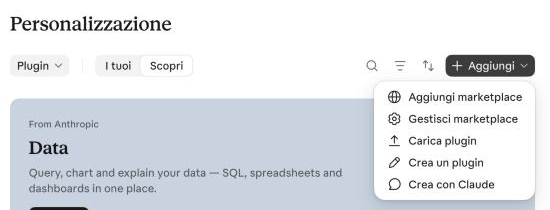
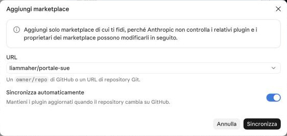
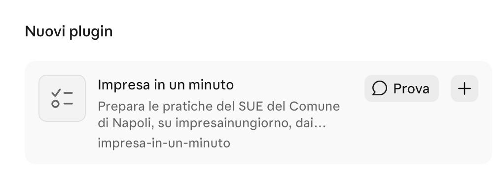

Portali in Claude
Quattro passi, due minuti, nessun terminale.
-
Apri i plugin di Claude
-
Aggiungi il marketplace
In alto a destra: + Aggiungi › Aggiungi marketplace.

-
Collega Portali
Scegli Aggiungi da un repository e incolla:
liammaher/portaliPoi clicca Sincronizza.

-
Aggiungi Portali
Lo trovi tra i Nuovi plugin: clicca +.

Fatto. Ora provalo
Nell'app Claude per computer scrivi:
Fammi vedere una prova
Claude compila una CILA con dati inventati sul portale vero. Tu devi solo accedere con SPID: non viene inviato nulla.
Aggiornare Portali
Prima di una pratica importante, controlla gli aggiornamenti: + Aggiungi › Gestisci marketplace › ⋯ › Verifica aggiornamenti. Se resta la versione vecchia: Rimuovi, riapri Claude e ripeti i passi 2 e 3.
Un avviso o una richiesta che non capisci
«Aggiungi solo marketplace di cui ti fidi» è l'avviso che Claude mostra per ogni plugin non suo: il codice di Portali è pubblico. Concedi accesso a GitHub non serve: chiudi l'avviso. Sul Mac, se ti chiede di installare gli strumenti per sviluppatori, accetta: contengono Python, che serve a Portali.